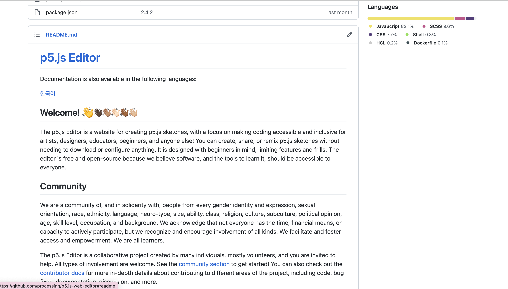
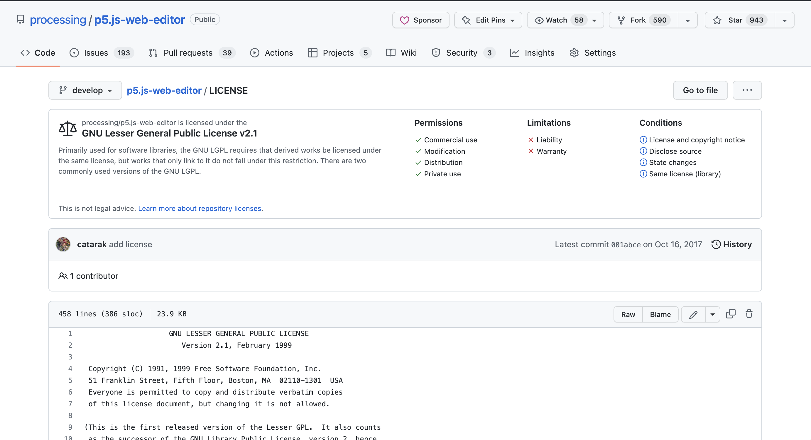
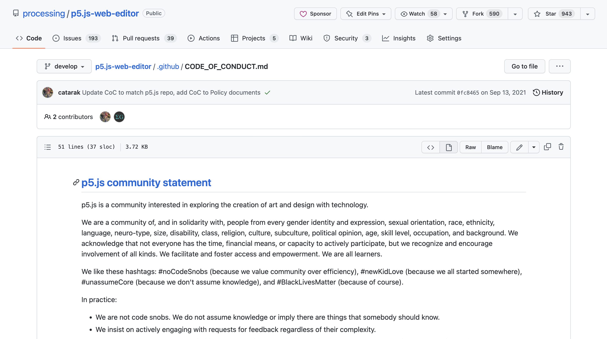
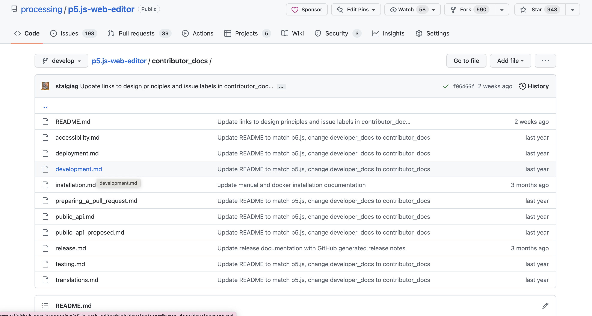
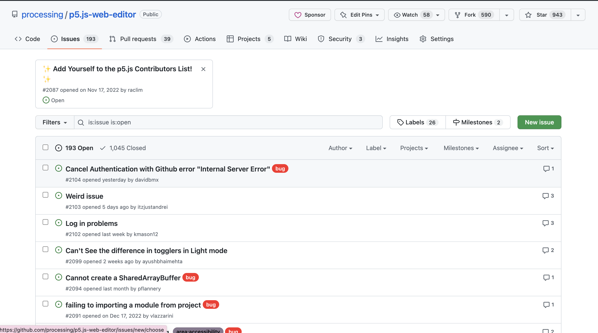
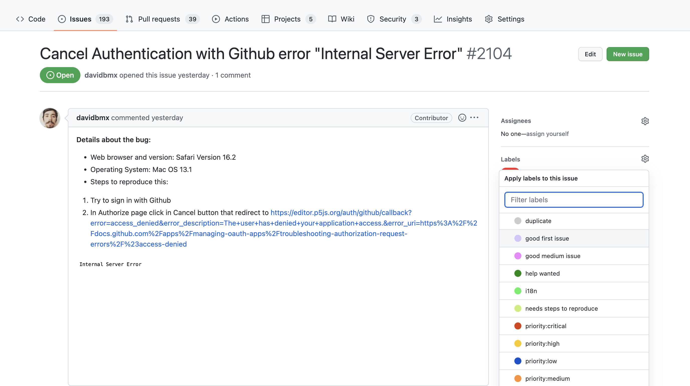
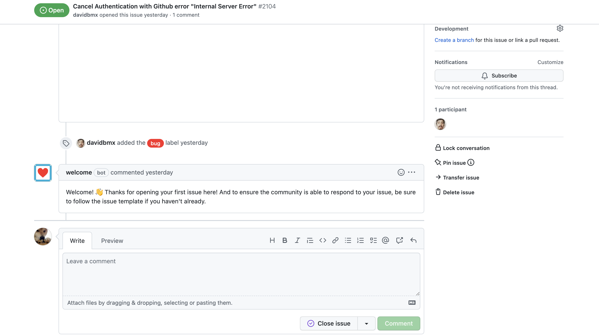
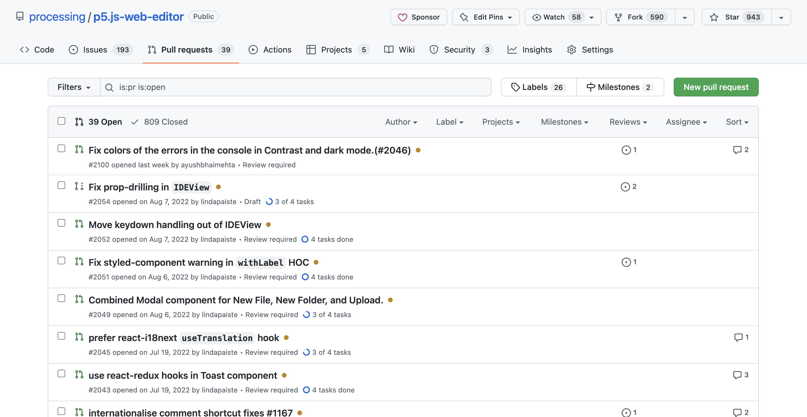

Getting Started with Contributing
Components of an Open Source Project
Github
On Github, you can contribute by writing code, contributing documentation, and submitting issues or bugs. GitHub Issues are built into GitHub and list the title, description, and assignee for an Issue. Other features are included as well, such as designating milestones and creating labels to keep everything in a repository organized.
README.md
The first place a newcomer to an open source project should typically go first is the README.md file within a Github repository. This file is the standard documentation file for open source projects.
Generally, this file contains: a title, description, list of features, instructions on how to use a project, ancillary technologies, and collaborators. A great README would also be nicely formatted and contain visual elements such as a table of contents or images!
A README.md is formatted in Markdown, which is a popular with open source projects because it allows rich text formatting that can properly displays bits of code. Github currently uses CommonMark, which was created in 2014 to standardize Markdown. Other alternatives, such as HTML, tend to have more powerful text formatting options, but are much more effort to code and less readable.
The LICENSE file
The LICENSE file contains information on how the project is licensed to the public, or how it can be used and distributed. It specifies what people can and cannot do with your project, and answers questions such as: Can someone modify your code and distribute it as their own? Can they include your code as a part of their own proprietary project?
Publishing a project under an open source license helps encourage the adoption of a standard, and gain the benefits from its ecosystem of its protections and contributors.
Two major categories of licenses are copyleft and permissive licenses.
Copyleft licenses require that any modified version of an open source project also be released under the same license as the original project. A strong copyleft license requires that any software that uses a project licensed under it must also be licensed in the same way. Weak licenses have no requirements for software that only use the licensed project.
Permissive licenses do not put restrictions on peple modifying or redistributing a project. For example, if a private company wanted to fork an open source project, add some proprietary changes, and redistribute the project, this would be within their right as long as the project was under a permissive license.
If no license exists, people CANNOT assume they can use a project.
If you're trying to choose a license for your own project, Choose A License is a great website to help you narrow down a license.
Code of Conduct
A Code of Conduct is a written set of rules and standards for those who interact with a project. Open Source projects can involve many people who might not have the same understanding or perceptions of what constitutes as acceptable conduct on the internet. Having a Code of Conduct formalizes and helps explain the project's policies.
Documentation
Documentation for a project entails more in-depth information on how to use or contribute to it, and are mostly written in Markdown. For example, documentation can cover how to setup a local environment, diagrams of the project's infrastructure, or guidelines for providing translations. The quality of a project's documentation can have a huge impact on its success. Clear, detailed, and up-to-date documentation can make it easy for people to use and contribute to an open source project. On the other hand, confusing, out-of-date, or incomplete documentation might cause people to abandon an otherwise awesome project.
Contributing to an Open Source Project
Creating an Issue
A good issue should be as descriptive as possible. When creating an issue, include version numbers of any relevant software, an explanation of expectations versus the real behavior, and steps to reproduce behavior. If necessary, supplementary media such as links to videos or images could be included as well.
If you have any code you need to share, copy and paste it. Do not include screenshots of code, since the code itself cannot be easily accessed from it.
Reviewing Contributions
 You can review contributions by triaging issues, or adding labels and deleting duplicates. An important label to add is a "Good First Issue", which indicates issues that newcomers could easily work on.
You can also review pull requests on Github, and can be assigned or request to be assigned as a reviewer for a certain pull request so you can leave comments or suggestions.
Adding Documentation
Make video tutorials, host a workshop, or create examples for the project.
Writing a Pull Request
Pull Requests are a feature of Github and other source code management tools that allows a repository's collaborators to review and give feedback on proposed code changes before they are accepted and merged to another branch.
Going through the pull request process can increase group knowledge, improve project quality, and develop interpersonal and critical skills through group critique.
A good pull request concisely explains the purpose of it through its title and description. If you're creating a pull request, first check if there's a pull request template or guidelines in the documentation. In your pull request, you should describe the thought process behind your code changes and the options you have considered in your description. Including screenshots, GIFs, or videos can also help others visualize your changes.
Your pull request should also reflect your coding process through clear commit messages and any relevant comments in the code. Ideally, all of your code should be specific to the issue you're working on and not include any unrelated changes.
Contributing Code
Contributing code is a more in-depth process that may vary depending on the project. If it's your first time getting started, it's recommended to look at issues labeled "Good First Issue".
Here is a loose overview detailing steps of what the code contribution process may look like:
- Creating a local copy of the project.
- Browsing issues on Github.
- Planning any relevant material.
- Creating a seprate, forked branch.
- Adding your changes.
- Committing the changes.
- Pushing the changes.
- Creating a Pull Request.
- Revising your pull request based on feedback.
Getting Involved with the Community
To get involved with the community, look at their website, social media, discourse forums, and in-person events.
Receiving Rejection
Rejection is a natural part of the open source experience. No matter how hard we work on a contribution, the maintainers of the project may still reject it.
If this happens to you, remember that it isn’t personal. It’s the maintainer’s job to do what they think is best for the project. You can use their feedback to create a stronger contribution in the future, or try working on a different project. There are many open source projects out there waiting for your help.
Let's Try It Out!
To practice what we learned above, review this website: Customize A Carrot.
After reviewing this website, brainstorm some issues or suggestions and head over to Customize a Carrot's Github Repository. Using the steps above, you can try to contribute to this repository by opening an issue. If you are already familiar with the process, try cloning the repository, making some changes, and creating a pull request!